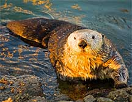

Tourist destinations around the world

Tourist destinations around the world |
|
| A tourist attraction is a place of interest where tourists visit, typically for its inherent or exhibited natural or cultural value, historical significance, natural or built beauty, offering leisure, adventure, and amusement. Explore more . | |
Other Cultural Attractions |
|
| Historical places, monuments, ancient temples, zoos, aquaria, museums and art galleries, botanical gardens, buildings and structures (e.g., castles, libraries, former prisons, skyscrapers, bridges), theme parks and carnivals, living history museums, ethnic enclave communities, historic trains and cultural events. Many tourist attractions are also landmarks. |  |
Best Places to Visit in the Caribbean |
| Cayman Islands | St. KittsSt. Kitts & Nevis | Barbados | U.S. Virgin Islands |
| Bahamas | Turks & Caicos | St. Lucia | Aruba |
| St. Barts | Bermuda | Jamaica | Santo Domingo |
Novelty attraction |
Tourist destination |
Novelty attractions are oddities such as the "biggest ball of twine" in Cawker City, Kansas, the Corn Palace in Mitchell, South Dakota, or Carhenge in Alliance, Nebraska where old cars serve in the place of stones in a replica of Stonehenge. Novelty attractions are not limited to the American Midwest, but are part of Midwestern culture. |
A tourist destination is a city, town, or other area that is dependent to a significant extent on the revenues accruing from tourism, or "a country, state, region, city, or town which is marketed or markets itself as a place for tourists to visit". It may contain one or more tourist attractions and possibly some "tourist traps." Siem Reap town for example is a popular tourist destination in Cambodia, mainly owed to its proximity to Angkor temples. |
| A tropical island resorts is an island or the archipelago that also depends of tourism as their source of revenue. The Bahamas in the Caribbean archipelago, Bali in Indonesia, Phuket in Thailand Hawaii and Fiji in the Pacific, and Ibiza in Mediterranean are examples of popular island resorts. |
Information taken from wikipedia.org